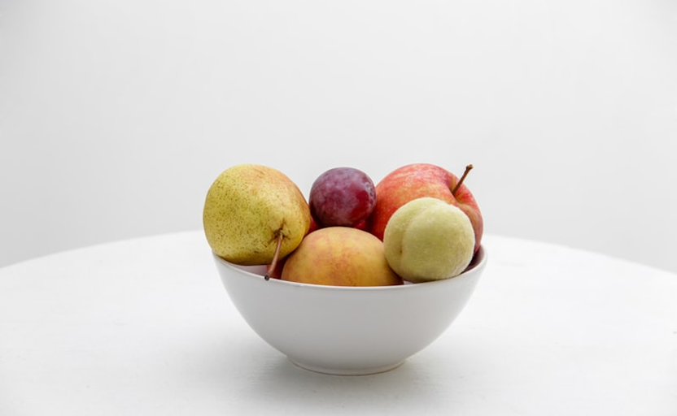
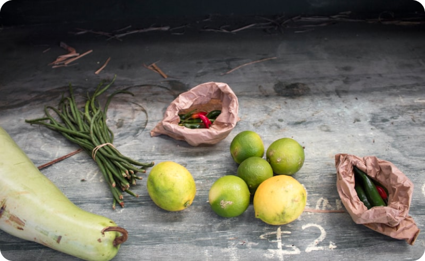

Fresh Fruits
Seasonal picks, naturally sweet and ready to enjoy—perfect for snacks, desserts, and everyday wellness.
Shop NowConnect directly with local farmers and enjoy the freshest organic produce delivered to your doorstep.
Start ShoppingKrishak connects you with trusted farmers so every fruit and vegetable is as fresh as the morning harvest—handled with care and delivered responsibly.

Seasonal picks, naturally sweet and ready to enjoy—perfect for snacks, desserts, and everyday wellness.
Shop Now
Leafy greens, roots, and more—grown with sustainable practices for flavor you can taste in every bite.
Shop VegetablesHandpicked selections from our local farmers.
We're more than just a marketplace – we're a bridge between farmers and families
Produce picked at peak ripeness and delivered within 24 hours for maximum freshness and nutrition.
By eliminating middlemen, we ensure affordable prices for you while farmers get fair compensation.
Every purchase directly supports local farming families and helps sustain traditional agriculture.
Fresh produce delivered right to your doorstep at your preferred time slot. Simple and hassle-free.